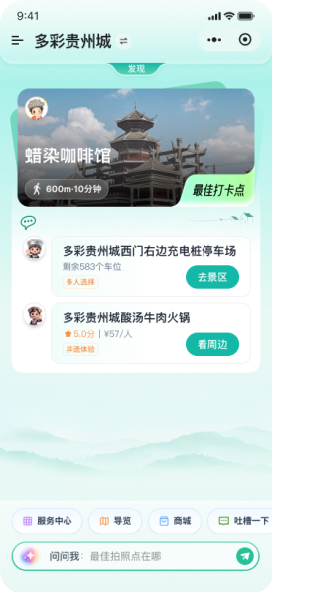
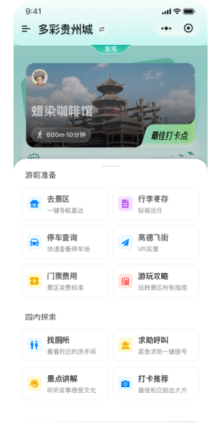
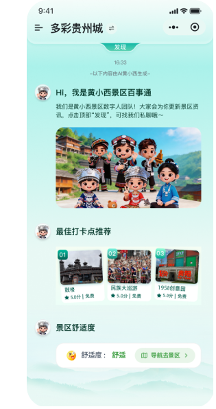
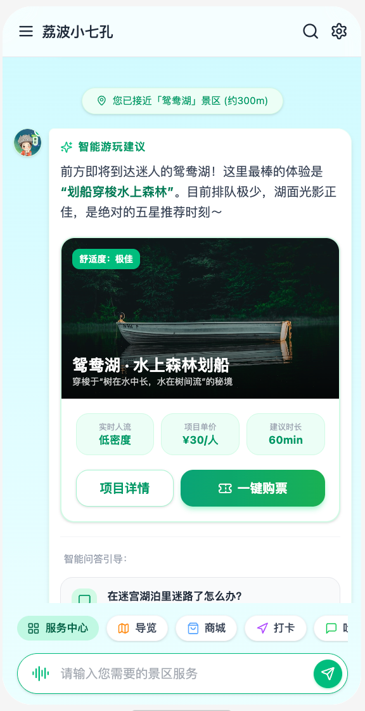
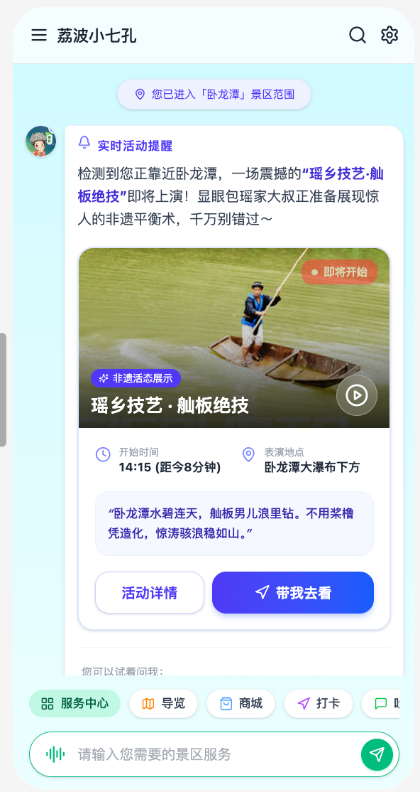
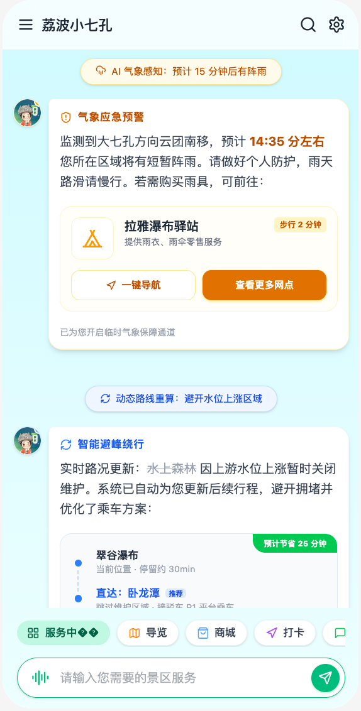

黄小西景区智能体（现有能力）
AI导游 × 游客服务中心 × 景区消费助手｜覆盖“游前-游中-游后”全旅程服务
黄小西景区智能体不是“单一聊天机器人”，而是一套基于大模型的AI伴游服务体系：在一个入口内把问答、导览、园区服务与消费承接串成闭环，推动游客从“自己做攻略”升级为“AI全程陪游”。
游前
决策&准备
- 信息获取（哪个景点好玩）
- 攻略查询（怎么玩 / 怎么走 / 玩多久）
- 门票购买（多少钱 / 怎么买）
- 交通准备（怎么去 / 停哪儿）
→
游中
伴游&服务
- 讲解伴游（边走边看边听：知识/故事/路线）
- 园区服务（找厕所/找设施等刚需）
- 主动提醒（演出/活动提醒、热门点推荐）
- AI导览（AI拍照/打卡辅助、周边推荐）
- 消费助手（商品购买/消费承接）
→
游后
分享&传播
- 朋友圈文案一键生成（更易分享传播）



景区智能体与智慧管理等景区内部系统打通，需获取的数据范围
先接入关键数据主题，支撑“项目提醒/活动提醒/停车/观光车/天气水况预警”等可落地能力
数据以智慧管理系统为中枢统一口径接入，分批开放；优先满足“可触发、可推送、可验证”的场景闭环。
A
交易核心数据（先跑通）
票务信息
票种 / 价格 / 使用规则
订单信息
下单 / 支付 / 退款 / 核销（对账与服务闭环）
分销/渠道
渠道来源 / 同步规则
B
运营/现场数据（驱动提醒/分流/预警）
停车场数据
剩余车位 / 饱和阈值 / 推荐停车场
闸机/客流
拥挤度 / 热力（错峰分流）
观光车数据
车辆位置 / 到站时间 / 运力 / 空座
实时天气水况
短临降雨 / 水位预警 / 风险区域（绕行与避险）
演艺活动
场次排期 / 地点 / 容量 / 临时变更
游玩项目
项目清单 / 位置 / 价格 / 建议时长
公告
临时管控 / 闭园 / 维护
PHASE 1 · 行前规划（把“决策+购票”从碎片化变成一站式）
出发前1–3天：信息获取 → 攻略查询 → 门票购买 → 交通准备
😩
攻略获取：多App拼凑，信息互相矛盾
传统模式
小红书搜攻略 → 携程买票 → 地图查路线 → 天气App看天气 → 点评查餐厅。
决策耗时30分钟+，反复跳转，“信哪个？”成为常态。
决策耗时30分钟+，反复跳转，“信哪个？”成为常态。
01
🤖
AI一站式规划：一个对话框完成“规划+购票”
票务对接
用户一句话：“小七孔怎么玩？帮我买门票”
智能体输出：入口建议 / 最优路线 / 实况天气 / 游玩时长 / 注意事项，并可直接在官方小程序内完成购票闭环。
智能体输出：入口建议 / 最优路线 / 实况天气 / 游玩时长 / 注意事项，并可直接在官方小程序内完成购票闭环。
体验提升（可作为对外口径）
10×决策效率
3min完成规划
+45%官方购票率（目标）
动图演示
场景01：行前规划/购票

如需按“行前/停车/行中导览/交易”分别展示多个动图，可继续追加。
🅿️
停车盲区：到了才发现没位，第一道噩梦
传统模式
自驾到门口才发现停车场满位 → 调头找其他停车场 → 山路拥堵30分钟。
旺季停车成为“入园前就崩溃”的体验拐点。
旺季停车成为“入园前就崩溃”的体验拐点。
02
🚗
智能停车导引：未到先知，提前锁定最优停车方案
停车场数据
距景区5km或ETA≤15分钟触发推送：“东门已满，建议前往西门，剩余128个车位，8分钟到达”。
结合景区停车数据 + 实时路况/ETA，把“找车位”从随机变为确定。
结合景区停车数据 + 实时路况/ETA，把“找车位”从随机变为确定。
对接要点（精简）
车位剩余/总量/阈值
ETA到达时间/距离
-30min找位时间（目标）
动图演示
场景02：停车盲区/智能停车导引

PHASE 2 · 行中游览（把“走马观花”变为全程沉浸伴游）
园内2–6小时：进入景区 → 沉浸游览 → 交通接驳 → 消费闭环
😵
项目靠问路：不知道附近有什么、怎么去、值不值得排
传统模式
项目信息分散在导览牌/口头咨询：游客需要反复问路、走冤枉路，临近项目才发现“排队太久/不适合”，决策成本高。
04
🧭
附近项目提醒：位置触发，推送“就近可玩”项目卡片
项目运营
基于游客当前位置与项目点位：当接近可玩项目时，自动弹出项目卡片（名称/排队/价格/建议时长/距离）。
让游客从“到哪儿玩”变为“走到哪儿，玩到哪儿”，减少走弯路与错过高价值体验。
让游客从“到哪儿玩”变为“走到哪儿，玩到哪儿”，减少走弯路与错过高价值体验。
交付物（节选）
POI项目点位
LBS近场触发
卡片就近可玩
界面示意
场景04：附近项目提醒（就近可玩/一键查看）

📢
活动靠运气：被动等广播，常常错过精彩演出
传统模式
演出/活动信息分散在广播、告示牌与口口相传，游客很难在“对的时间”出现在“对的地点”，错过后体验与口碑都受影响。
05
🔔
实时活动提醒：位置+时间触发，自动推送活动卡片
活动运营
基于游客当前位置与活动开始时间：在“将开始/正在进行/附近可达”时自动弹出活动卡片，展示主题/开场倒计时/地点，并提供一键“带我去看”。
让活动触达从“靠运气听到”变成“到点必提醒、走到能找到”。
让活动触达从“靠运气听到”变成“到点必提醒、走到能找到”。
体验提升（示例）
-50%错过率（目标）
+30%活动到场（目标）
界面示意
场景05：实时活动提醒（位置+时间推送）

🤳
打卡困难：人从众，拍不到满意照片
传统模式
热门点拥挤导致体验差、传播素材差，游客“来都来了但不想发”。
06
📍
AI机位推荐 + 错峰引导：拥挤度可视化与分流
人流数据
结合人流指数：“当前拥挤(8/10)，建议14:30后前往；附近冷门机位推荐……”
实现分流与满意度提升双赢。
实现分流与满意度提升双赢。
数据要求（节选）
0–10拥挤度
POI热力/阈值
+80%满意度（目标）
界面示意
场景06：AI机位推荐/景点打卡

🚌
观光接驳车盲等：不知道几分钟到、满座坐不上
传统模式
纸质时刻表 → 站点难找 → 暴晒/暴雨下干等；调度端也难以实时掌握客流，产生空跑与拥堵。
07
🚐
智能穿梭：实时到站+空座预报（可逐步）
观光车数据
C端：“最近站点200米，下一班3分钟到，空座12”。
B端：基于热力预测给出调度建议（先看板提示也可）。
B端：基于热力预测给出调度建议（先看板提示也可）。
经营提升（示例口径）
-70%等车焦虑
-40%空座率（目标）
+35%运力利用（目标）
界面示意
场景07：观光接驳车（实时到站/空座预报）

🚻
找厕所崩溃：找5–10分钟，旺季还要排队
传统模式
指示牌被遮挡、工作人员难找、排队信息未知——带娃家庭体验崩盘。
08
🧭
秒级定位：不仅告诉你在哪，还告诉“哪一个最优”
设施数据
说“找厕所” → 3秒返回：距离/排队预估/母婴室/无障碍/是否有纸（按数据能力逐步开）。
这是口碑裂变型刚需功能。
这是口碑裂变型刚需功能。
交付与数据（节选）
10×查找效率
POI设施点位
队列排队估算（可选）
界面示意
场景08：找厕所（设施定位/去导航）

🍜
吃饭靠碰运气：不懂怎么选，亲子/情侣/健身都不匹配
传统模式
餐厅信息不透明、推荐不分人群：亲子担心不方便，情侣找不到氛围位，健身人士怕高油高盐。
结果要么随便凑合、要么干脆不消费，体验与二销都被锁死。
结果要么随便凑合、要么干脆不消费，体验与二销都被锁死。
09
🍲
画像化餐饮推荐：亲子/情侣/健身等一键匹配
二销承接
基于游客画像 + 当前位置 + 饭点：自动推荐更“对味”的餐厅与套餐（并支持提前下单）。
例如：亲子（儿童餐/座位宽松/少辣）｜情侣（景观位/氛围餐/拍照友好）｜健身（低油低盐/高蛋白/轻食）。
让选择从“踩雷”变为“按偏好命中”，同时提升转化与口碑。
例如：亲子（儿童餐/座位宽松/少辣）｜情侣（景观位/氛围餐/拍照友好）｜健身（低油低盐/高蛋白/轻食）。
让选择从“踩雷”变为“按偏好命中”，同时提升转化与口碑。
增长口径（示例）
+120%餐饮消费（目标）
券套餐/折扣
⛈️
突发靠运气：被动等广播，投诉外溢
传统模式
暴雨/项目关闭/走散等突发事件依赖人工广播与现场解释，易产生安全隐患与外部投诉扩散。
10
🛡️
AI预判 + 主动干预 + 投诉内化：把风险与舆情前置
实时天气水况等
天气预警：提前推送“最近避雨点”；项目关闭：路线自动绕行（用户无感切换）；
舆情前置：识别对话中的负面情绪关键词，生成预警给工作人员，投诉尽量留在体系内。
舆情前置：识别对话中的负面情绪关键词，生成预警给工作人员，投诉尽量留在体系内。
预期效果（示例）
30min提前量
-60%外部投诉（目标）
秒级路线修正
界面示意
场景10：突发事件（避雨点/公告）

PHASE 3 · 行后留存（把“出园即断联”变为传播与复购）
离开景区后：社交传播 → 跨景区联动 → 全域复购
🗺️
行程断裂：每换一个景区就要重新搜、重新做攻略
传统模式
单景区体验与下一站完全割裂，用户画像无法继承，跨景区复购与联动难做。
12
🌐
矩阵联动：带着用户画像无缝衔接（小七孔→黄果树→西江…）
全域复购
游玩结束后智能体主动推荐下一站：基于亲子/预算/偏好匹配景区与酒店/交通。
从“单景区消费”升级为“贵州全域游”，形成更高的用户终身价值。
从“单景区消费”升级为“贵州全域游”，形成更高的用户终身价值。
复购提升（示例）
+25%跨景区复购（目标）
3×人均天数（目标）
票务交易对接方式
两种方式：H5嵌入（快上线/兜底）与接口对接（长期主方案）
🧾
对接方式①：H5嵌入（上线快，但可控性与沉淀受限）
方案A
结论：适合“一期快上线/兜底”，不适合作为长期主方案。
优点：上线快、改造少；可作为接口方案的备选通道。
不足：体验与数据沉淀受限；营销/渠道策略定制空间小，后续迁移成本较高。
优点：上线快、改造少；可作为接口方案的备选通道。
不足：体验与数据沉淀受限；营销/渠道策略定制空间小，后续迁移成本较高。
B
🛒
对接方式②：接口对接
方案B（推荐）
推荐理由：
体验统一可控（问答/导览/交易一体）
自主可迭代（前后端一体交付，需求变更响应快）
数据可沉淀（用户行为/交易链路/运营效果统一口径）
全链路可追溯（库存/下单/核销/退改/对账口径一致）
对接范围（概括）：商品/库存/订单/核销/售后/对账。
体验统一可控（问答/导览/交易一体）
自主可迭代（前后端一体交付，需求变更响应快）
数据可沉淀（用户行为/交易链路/运营效果统一口径）
全链路可追溯（库存/下单/核销/退改/对账口径一致）
对接范围（概括）：商品/库存/订单/核销/售后/对账。
关键原则（必须项）
支付在我方小程序
用户UnionId映射
对账全链路可追溯
双轮驱动：用户体验爽感 × 景区经营增长
把“服务”做成刚需，把“交易”做成顺手，把“数据”做成运营能力
用户体验革命（从…到…）
从“五App拼攻略”到“一个对话框3分钟搞定”
从“到了景区关掉工具”到“全程不离手AI伴游”
从“拍照即走”到“边走边听边懂”
从“盲等观光接驳车”到“实时到站+空座预报”
从“满山找厕所”到“秒级定位+最优选择”
从“出园即断联”到“跨景区联动与复购”
经营升级
二销收入提升：场景化推荐承接餐饮/接驳/套餐券
降本增效：接驳动态调度、停车分流、减少无效发车
投诉内化闭环：情绪识别预警+工单介入，减少外部投诉扩散
数据驱动运营：热问、客流、停车、闸机、票务统一看板
官方渠道转化：降低对OTA依赖，提升官方直销占比
能力可沉淀：小程序由我方交付，体验统一、可持续迭代
规模化路径：从小七孔试点到全域可复制
小七孔试点
跑通数据+票务全链路
跑通数据+票务全链路
→
黄小西矩阵联动
黄果树/西江等
黄果树/西江等
→
省内多景区复制
4A+景区
4A+景区
→
全国输出
ISV生态
ISV生态